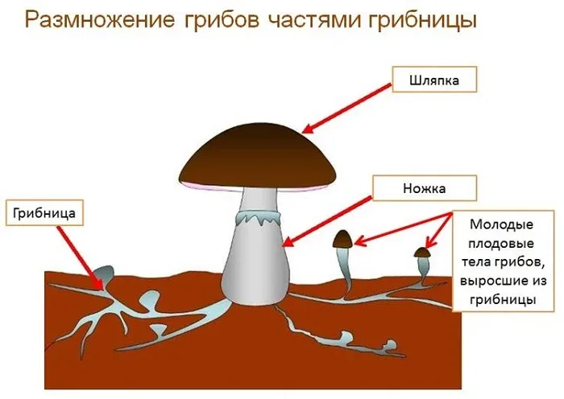

Сдесь вы узнаете многое о грибах
1. В составе каждого гриба – приблизительно 90% воды. Поэтому при обжарке грибы значительно уменьшаются в размерах, а если вы планируете использовать сырые грибы (например, шампиньоны) в салате, то чистить их лучше без воды.
2. Скорость роста грибницы съедобных грибов – около 10 см за год. Через несколько лет она принимает в земле весьма забавные конфигурации.
3. Не всем подходят. Так, любимые в средней полосе России розовые волнушки и сыроежки считают ядовитыми немцы; французы опасаются употреблять в пищу опёнок и те же сыроежки; итальянцы считают, что ядовиты маслята. Даже благородный белый гриб попал под подозрение у европейцев: например, в Швейцарии их белые грибы рискуют собирать.
Сылка на основной сайтЕсли вы любите грибы, то нужно их правильно собирать
Такое название появилось из-за причудливой формы шляпки, которая напоминает человеческий мозг. Если сорвать такой гриб, то нужно быть с ним крайне осторожным. В сыром виде он содержит смертельно опасный для человека яд. Поэтому его нужно уметь правильно готовить. Во многих странах мира такой гриб считается деликатесом и подается в знаменитых ресторанах. Найти в свободной продаже гриб можно, но рядом с ним обязательно будет находиться табличка, предупреждающая о его опасности. Если нет навыков правильного приготовления, то лучше обходить стороной и выбрать более безопасные виды.
Весьма интересный гриб, который в раскрытом состоянии напоминает морскую звезду. Этот вид настолько редкий, что встречается только в Японии и Техасе. Ни в одном другом уголке планеты он обнаружен не был. Ученые до сих пор не могут выяснить, с чем связано такое необычное произрастание, ведь между двумя странами расстояние в тысячи километров. В закрытом виде гриб очень напоминает сигару. Именно из-за этого он и получил свое название. Что касается сравнения с дьяволом, то он появился из-за темных оттенков. Если человек решит полюбоваться этим видом в природе, то нужно искать гнилые дубы и кедры. Именно там растут Сигары дьявола.
Гриб можно встретить в различных уголках планеты, но он не сильно распространен. Растет только на деревьях и плотными рядами друг к другу. Он обладает весьма интересным окрасом с градиентами цветов. Именно из-за этого появилось сравнение с хвостом индюка или павлина. Со временем гриб начинает темнеть с сердцевины и через несколько дней полностью становится черным. В пищу этот вид не употребляется, но зато он широко используется в медицине, особенно в японской. Считается, что Хвост индюка является отличным средством для профилактики рака. Но это не было доказано учеными.
Еще один редкий вид, который можно встретить в Европе или Северной Америке. Пройти мимо такого гриба невозможно, так как он имеет весьма интересную продолговатую форму. Впервые вид был обнаружен в начале XVIII века. Свое название получил из-за сходства с собачьим половым органом. Ножка имеет розовый или оранжевый оттенок, а вот наконечник всегда коричневый. По мере созревания кончик начинает раскрываться, а споры распространяются наружу. От него исходит неприятный гнилостный запах, который невозможно ни с чем перепутать. У Мутинуса собачьего есть еще одна удивительная особенность. Если насекомые или птицы съедят споры из наконечника, то через пару часов он поменяет свой цвет на оранжевый, а сам гриб вскоре умрет.
Крайне необычный гриб, который притягивает к себе взгляды других людей. Главная особенность – свечение в темноте. В этом феномене нет ничего необычного, так как у вида внутри содержатся природные люминесцентные вещества, которые и создают свет. Заметить светло-зеленое свечение можно только в темное время суток. При этом желательно, чтобы температура воздуха была в районе 20 градусов тепла. Самое яркое свечение можно наблюдать в момент созревания гриба. Затем цвет начинает тускнеть, а потом и вовсе пропадает. Его можно найти в дикой природе только в азиатских странах.
Имеет очень странную форму и может отталкивать от себя. Но не стоит бояться, так как он не является ядовитым и содержит в себе массу полезных веществ. На вкус он очень нежный и сладковатый. Добыть Бамбуковый гриб очень сложно, так как он растет в густых лесах Африки, Америки и Австралии. При этом он считается редким. Основная особенность гриба связана с необычной формой юбки. Она сетчатая и очень хрупкая. Если взяться за нее руками, то она легко сломается. Наверху гриба расположился небольшой наконечник темно-серого цвета. Он источает неприятный для человека запах, который привлекает насекомых.
Если человек нашел такой гриб в лесу, то ему сильно повезло, так как он практически нигде не произрастает. Его можно обнаружить по всему миру, кроме сильно холодных областей. Молодой экземпляр привлекает к себе внимание с помощью яркого фиолетового окраса. По мере созревания оттенок становится более темным, а закрученная ранее шляпка начинает полностью раскрываться. Внешний вид зрелого и молодого гриба сильно отключается друг от друга, поэтому их можно даже спутать. Гриб съедобен, но стоит быть осторожными. Он часто произрастает на зараженных ядами землях, следовательно, мог впитать их внутрь себя. В его мякоти окажется мышьяк, и человек может умереть.
Если человек нашел такой гриб в лесу, то ему сильно повезло, так как он практически нигде не произрастает. Его можно обнаружить по всему миру, кроме сильно холодных областей. Молодой экземпляр привлекает к себе внимание с помощью яркого фиолетового окраса. По мере созревания оттенок становится более темным, а закрученная ранее шляпка начинает полностью раскрываться. Внешний вид зрелого и молодого гриба сильно отключается друг от друга, поэтому их можно даже спутать. Гриб съедобен, но стоит быть осторожными. Он часто произрастает на зараженных ядами землях, следовательно, мог впитать их внутрь себя. В его мякоти окажется мышьяк, и человек может умереть.
Имеет очень необычную форму, которая напоминает плетеную корзину или решетку. Именно из-за этого он и получил свое название. Вид настолько редкий, что его занесли в Красную книгу. При обнаружении, ни в коем случае нельзя вырывать, так как их осталось очень мало. Гриб трудно заметить, так как он произрастает в густой траве или под листвой. Считается несъедобным и источает неприятный запах.
Имеет очень необычную форму, которая напоминает плетеную корзину или решетку. Именно из-за этого он и получил свое название. Вид настолько редкий, что его занесли в Красную книгу. При обнаружении, ни в коем случае нельзя вырывать, так как их осталось очень мало. Гриб трудно заметить, так как он произрастает в густой траве или под листвой. Считается несъедобным и источает неприятный запах.
В дикой природе существует несколько подвидов Грибов-дождевиков. Они относятся к семейству шампиньонов, но существенно различаются от них. Главное отличие – это полностью закрытая шляпка. Ножка прячется внутри нее. Сначала гриб имеют плотную и упругую структуру, но мере созревания начинает размягчаться, а на самой шляпке появляется небольшое отверстие. Из него распыляются споры, которые в будущем станут новыми грибами.
В дикой природе существует несколько подвидов Грибов-дождевиков. Они относятся к семейству шампиньонов, но существенно различаются от них. Главное отличие – это полностью закрытая шляпка. Ножка прячется внутри нее. Сначала гриб имеют плотную и упругую структуру, но мере созревания начинает размягчаться, а на самой шляпке появляется небольшое отверстие. Из него распыляются споры, которые в будущем станут новыми грибами.
Следущая